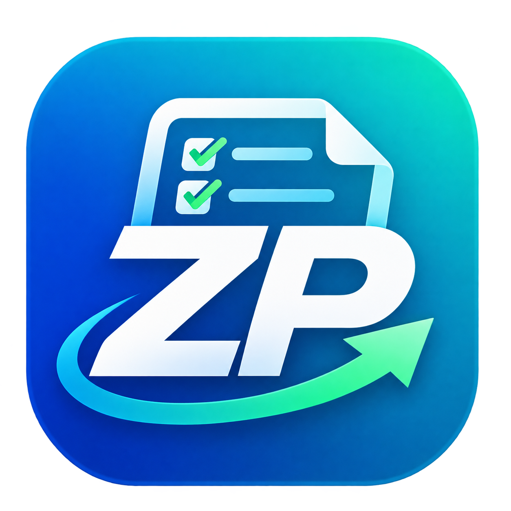
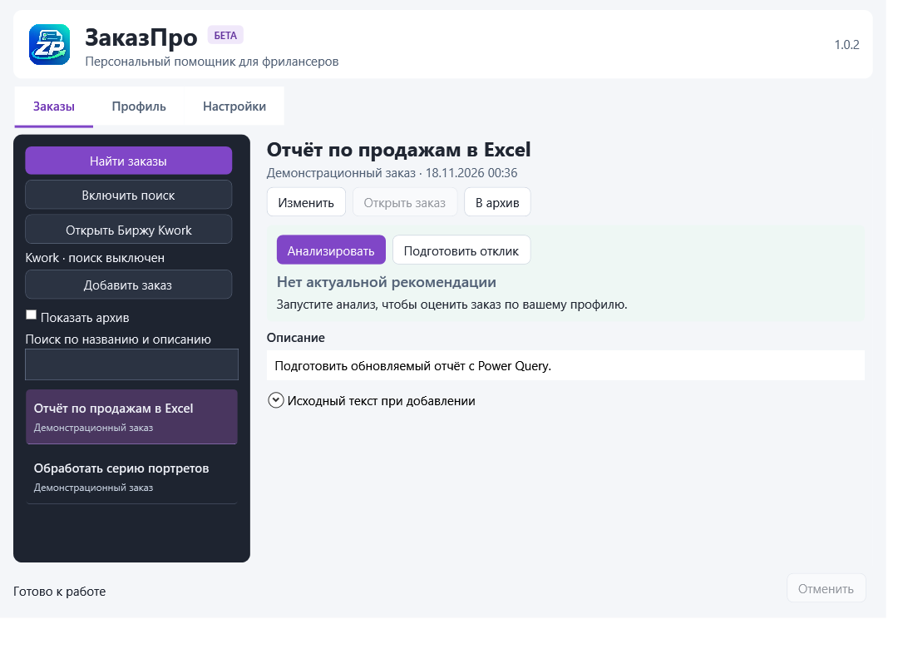
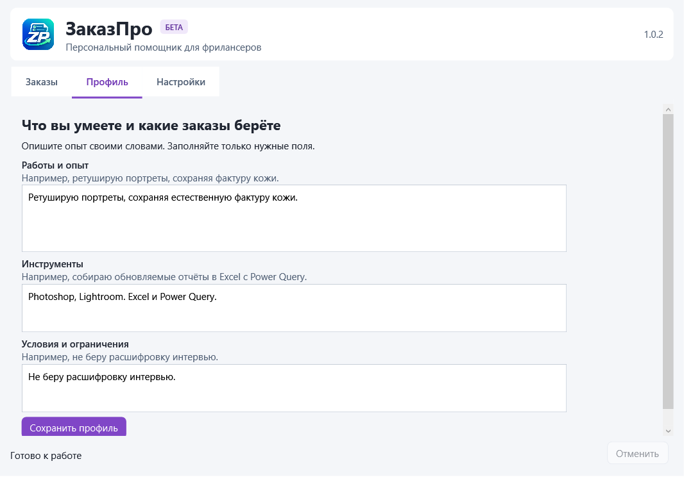

Бесплатно, без оплаты API
Все функции доступны бесплатно. Анализ и черновики работают через локальную Ollama — платный API не требуется.

ЗаказПро БЕТАДля фрилансеров · Windows 11
Собирайте заказы в одном месте, оценивайте их с помощью локального ИИ и готовьте черновики откликов.
Скачать ЗаказПроВерсия 1.0.2 · открытая бета · бесплатно
Один установщик — файлы проверки он получит сам.

Все функции доступны бесплатно. Анализ и черновики работают через локальную Ollama — платный API не требуется.
Модель работает на вашем компьютере. Пользовательская база также хранится локально. Для Kwork и загрузки моделей нужен интернет.
Проверьте и отредактируйте черновик перед отправкой. Программа не отправляет отклики за вас.
Ваш опыт имеет значение
Заполните работы и опыт, инструменты, условия и ограничения. Используйте рекомендации как помощь при выборе заказа.
Искусственный интеллект может ошибаться. Решение о работе и содержании отклика остаётся за вами.

Windows 11 x64. Для Kwork — Microsoft Edge WebView2 Runtime. Среда .NET включена в установщик.
Предварительная оценка: от 4 ГБ ОЗУ и 1 ГБ для установки, отдельно от базы и модели. Минимальная конфигурация не испытана.
Ollama и gpt-oss:20b. Модель занимает около 14 ГБ; требования к памяти и свободному месту выше, чем у самого приложения.
Подробные требования ↗«ЗаказПро» распространяется бесплатно. Если приложение оказалось полезным для вас, вы можете поддержать его дальнейшее развитие добровольным вкладом.
Поддержка полностью добровольная и не влияет на доступность функций программы.
Поддержать проект